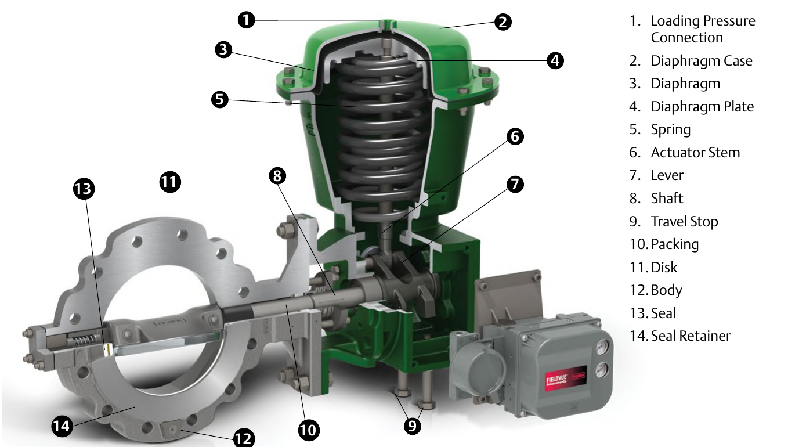

Rotary Actuator — Lever & Shaft

- 7Lever — converts the actuator stem's linear motion into rotary force
- 8Shaft — carries that rotation into the disk
- 2Diaphragm case (2), diaphragm (3), plate (4) & spring (5) — the same driving mechanism a sliding-stem actuator uses
After Control Valve Handbook, 6th ed., Fig. 1.17 — used directly, own printed numbers 1–14 and key retained. Component Index: cvh-cmp-rotary-actuator-cutaway.